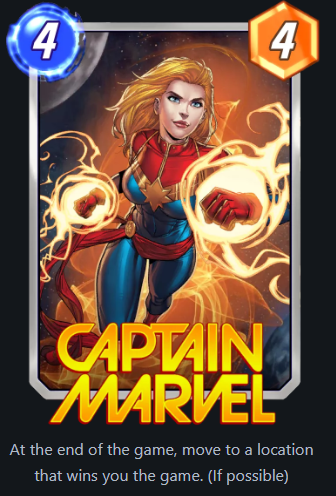
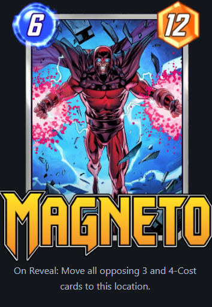
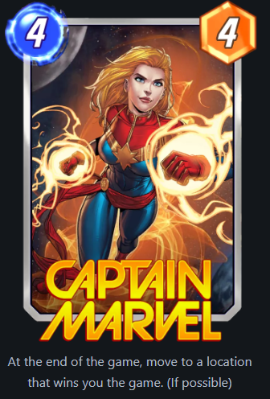
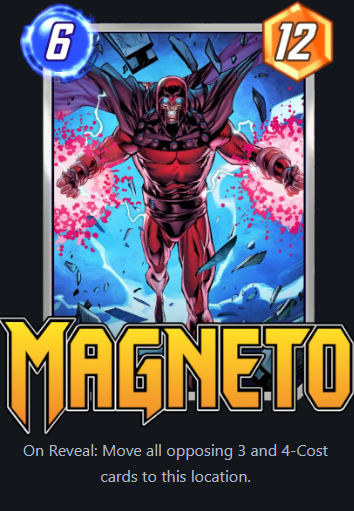

Dicas
Iniciativa
A ordem de revelar entre as cartas é chamada de iniciativa. Quem estiver ganhando em cada round tem iniciativa e revela as cartas primeiro. A informação de quem revela aparece como um brilho no nome do jogador. Essa informação é útil porque algumas estratégias precisam que as cartas do inimigo estejam reveladas, e outras o oposto. Jogar para ter iniciativa implica dividir o poder e colocar em dois locais, enquanto concentrar o poder em um local tende a ter menor chance de ganhar iniciativa.
Arquétipos comuns
Alguns decks comuns que são bons de conhecer: spectrum-destroyer, ao revelar, shuri, Loki, Bounce, Galactus, Evolucionario, Sera Control, Hela, Destroy-deadpool, movimento, silky-smoove.
Artes e splits
Ao jogar cada partida, se acumula boosters de uma carta. Estes boosters são usados para fazer um upgrade estético na carta, adicionando profundidade e animações.
A cada 155 boosters, a carta atinge a borda infinita e libera um split.
Splits são versões da mesma carta com mudanças cosméticas, cor de fundo e efeito.
Cada split tem uma chance aleatória de efeito, cor de fundo e cor do efeito.
As variantes mais raras são os efeitos preto e branco e fundo dourado. E a borda mais rara é de crackles. Tais efeitos só são possíveis a partir do 4 split, mas não são garantidos.

 Além dos splits, as cartas base têm variantes de suas artes feitas por diferentes artistas. Estas artes são ganhadas jogando e podem ser compradas por ouro.
Além dos splits, as cartas base têm variantes de suas artes feitas por diferentes artistas. Estas artes são ganhadas jogando e podem ser compradas por ouro.


Snap e cubos
Um dos conceitos de poker que o marvel snap usa é a aposta, nesse caso de cubos. Ao entrar em uma partida, o jogador paga um cubo. Cada jogador pode a qualquer momento dar um snap, dobrando os cubos em jogo. Se os dois fizerem, a partida valerá 8 se for até o fim. Qualquer jogador pode também desistir do jogo se achar que irá perder, apostando só a metade do valor final. O gerenciamento dos cubos é uma habilidade que determina o quanto o jogador pode subir nos rankings e no modo conquista estes cubos representam a vida dos jogadores. De forma geral, aumentar as apostas é interessante quando se julga que sua posição seja melhor que o seu adversário, da mesma forma, se se acredita que o adversário esteja melhor, recuar é uma estratégia de salvamento de cubos essencial.
/cdn.vox-cdn.com/uploads/chorus_image/image/71640421/marvel_snap_gameplay_2.0.jpeg)